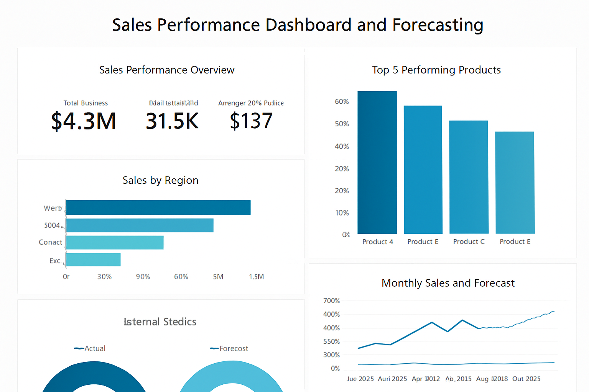
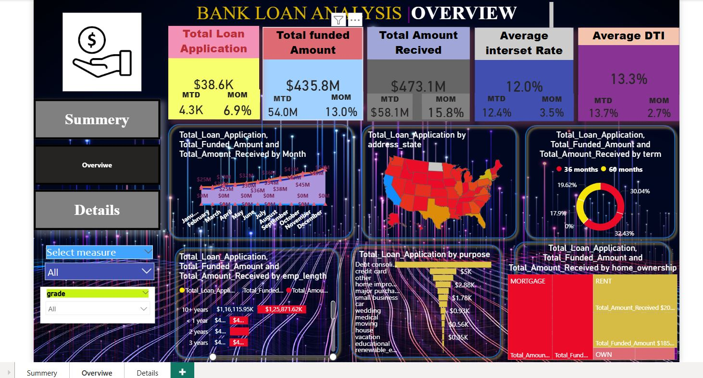
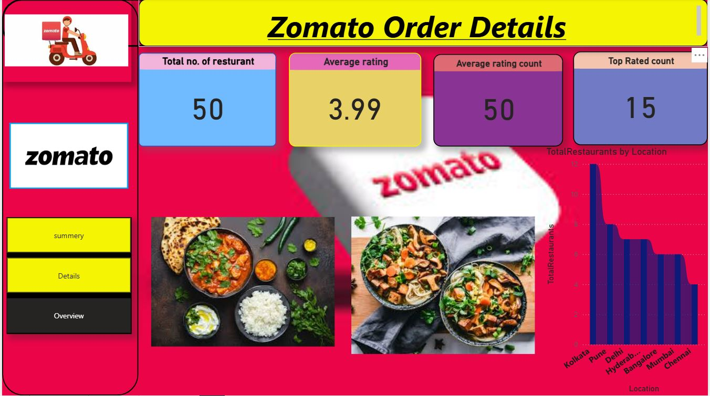
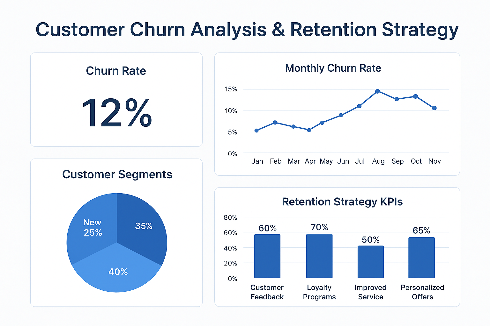

About Me
Hi, I am Shruti Patil 👋. I have recently completed Btech in Computer Science Engineering student with 6 months of internship experience in Data Analytics. Skilled in Python, SQL, Power BI, and Machine Learning, I enjoy transforming raw data into meaningful insights to support decision-making.
Skills
- Programming: Python (Pandas, NumPy, Scikit-learn)
- Databases: SQL, MySQL
- Visualization: Power BI, Tableau, Matplotlib, Seaborn
- Other: Excel, Statistics, GitHub
Resume
Download my updated resume here: 📄 View Resume
Projects
📊 Sales Performance Dashboard & Forecasting
This project analyzes sales data and creates an interactive dashboard to track performance across regions, products, and time periods. Includes forecasting to predict future sales.
Tools: Python, SQL, Excel, Power BI
🔗 GitHub📊Bank loan Analysis
This project focuses on analyzing bank loan data to evaluate loan performance, customer profiles, and repayment trends. Using Excel and Power BI, I created an interactive dashboard.
Tools:Excel (data cleaning & preprocessing), Power BI (interactive dashboard creation)
🔗 GitHub📊Zomato Order Details
This project explores customer order behavior on Zomato to analyze food delivery trends, customer preferences, and restaurant performance. The dataset includes order details such as cuisine type, delivery time, ratings, and cost.
Tools: Excel (data cleaning & preprocessing), Power BI (interactive dashboard creation)
🔗 GitHub📊Monthly Expence tracker
This project focuses on tracking and analyzing monthly expenses to help manage personal finances effectively.
Tools:Excel
🔗 GitHub📊Titanic project

This project analyzes the famous Titanic dataset to uncover survival patterns among passengers. Using Python and data visualization libraries, I performed exploratory data analysis (EDA) to identify key factors that influenced survival.
Tools:Python, Pandas, NumPy, Matplotlib, Seaborn
🔗 GitHub📉 Customer Churn Analysis & Retention Strategy
Built a predictive model to identify customers likely to churn and designed retention strategies to improve customer loyalty.
Tools: Python (Pandas, NumPy, Scikit-learn), Power BI
🔗 GitHubInternship Experience
Data Analyst Intern – Irizpro
- Analyzed datasets using Python/SQL to derive actionable insights.
- Created interactive dashboards in Tableau/Power BI to track KPIs.
- Collaborated with cross-functional teams to improve data reporting processes.
Contact
Email: patilshruti684@gmail.com
GitHub: https://github.com/Shruti8975
LinkedIn: https://www.linkedin.com/in/shruti-patil-144398307